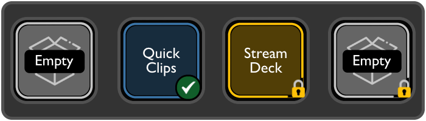

An Elgato® Stream Deck plugin that gives you simple, reusable clipboard slots for capturing, storing, and pasting text whenever you need it.
What It Does
Quick Clips turns Stream Deck buttons into flexible clipboard slots. Instead of setting up static text buttons in the Stream Deck UI, each button can grab whatever text is currently on your clipboard with a single press.
Keep a few Quick Clip buttons on your Stream Deck. When you copy something you want to reuse, press an empty button to store it. Press the same button again to paste it into the active app. When you are finished with that text, press and hold to clear the slot so it is ready for the next clip. There's no need to open the Stream Deck UI during your workflow.
This is especially useful for text that changes often, such as code snippets, API values, email addresses, URLs, or anything you need to paste multiple times before moving on.
Features
One-click capture and paste
Click an empty button to capture the clipboard, click a filled button to paste
Dynamic content
Captures whatever text is on your clipboard at the moment you press the button
Prevent Clear mode
Optional lock to protect stored clips from being cleared
Hold to clear
Press and hold for one second to clear a slot when it is not locked
Visual feedback
Icons show whether a slot is empty, filled, or locked
Persistent storage
Stored clips survive app restarts and profile switches
Gallery
Button States
Settings Panel
Hold-to-Clear
Installation
From the Stream Deck Marketplace (Pending Publication)
- Open the Stream Deck application
- Go to the Marketplace
- Search for "Quick Clips"
- Click Install
Manual Installation (Development)
- Clone this repository:
git clone https://github.com/glmorgan/quick-clips.git cd quick-clips - Install dependencies:
npm install - Build the plugin:
npm run build - Link the plugin to Stream Deck:
ln -s "$(pwd)/com.quickclips.streamdeck.sdPlugin" \ "$HOME/Library/Application Support/com.elgato.StreamDeck/Plugins/" - Restart Stream Deck
streamdeck restart com.quickclips.streamdeck
How It Works
Basic Usage
- Add a Quick Clips button to your Stream Deck from the Actions panel
- Click an empty button to capture the current clipboard contents
- Click a filled button to paste the stored text into the active application
- Press and hold for one second to clear the slot. You will see a "Release to Clear" message while holding
Visual States
| State | Icon | Description |
|---|---|---|
| Empty, unlocked | Ready to capture | |
| Empty, locked | Protected and ready to capture | |
| Filled, unlocked | Contains content and can be cleared | |
| Filled, locked | Contains protected content |
Platform Support
Technical Details
- Built with TypeScript using the Elgato Stream Deck SDK v2.0
- Uses native macOS clipboard tools (pbpaste and pbcopy)
- Settings are stored persistently within Stream Deck profiles
- No external services or network access required